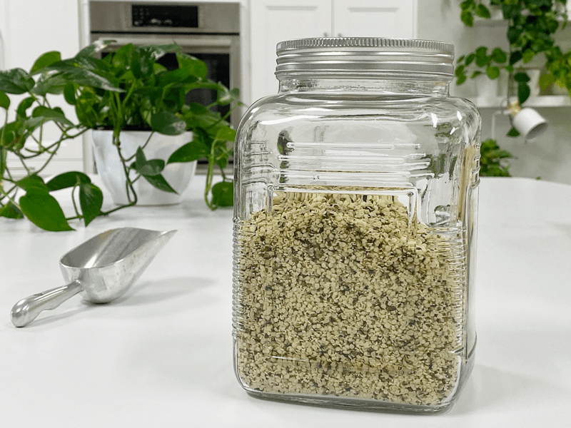

Hemp Seed Flour – yea, not so much
What would you say to a flour that helps aid in digestion, balance hormones, and improves metabolism? Hemp seeds offer up an excellent 3:1 balance of omega-3 and omega-6 fatty acids, which promote cardiovascular health. Most diets are too high in omega 6, which can lead to inflammation and dis-ease. Ultimately, we should aim for a 1:1 ratio when it comes to omega 3 and 6. I think we are off to a good start in why hemp seed flour should be a part of our raw ingredient list.

Complete Protein!
For vegans and anyone else who avoids animal products, hemp is an excellent alternative because it contains very high-quality protein. In fact, it is a complete protein. Due to its protein source, they are more digestible than seeds or nuts, and won’t leave you feeling bloated. Hopefully. Of course, we all react differently to foods, so test to see how your body responds to them.
Calling this “recipe” a flour is sort of a stretch. Due to the high-fat content in these tiny seeds, it creates more of a moist, small crumble “flour.” So please don’t expect it to turn into a fine flour. So why did I make a post out of a seed that really can’t be ground to a flour? Well, because I see other recipe developers use the term “hemp flour,”…. and I can almost guarantee you that they are using a finely processed flour instead of using raw hemp seeds. Nouveauraw is a place to LEARN, and I don’t want you to be confused.
Unlike a lot of raw flours here on my site, hemp seeds don’t require soaking before making flour. (read here), which is a huge time-saving gem in the kitchen. It almost seems silly to write up this post, but I think we can all learn something new every day. Hemp seeds alone do not mill into a powdery flour; they become butter if not careful because of the high oil content. rIn order to get flour, you need to remove the oil content, which is done commercially.
Hemp seeds are a fantastic nut-free alternative. They will impart a delectable, nutty flavor to your recipes. I realize that this is a raw site, but most of you still do some cooking on the side. If that is you, and you bake bread, try adding hemp flour as it deepens the texture of bread, provides a nice serving of fiber, lots of omega essential fatty acids, and increases the digestible protein. I hope you found this enlightening. blessings, amie sue
© AmieSue.com